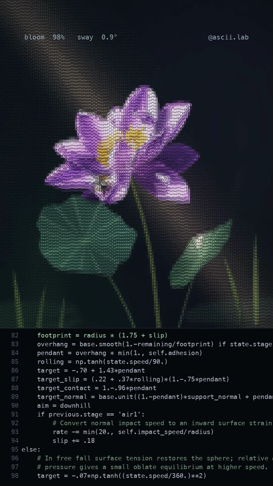

04
Lotus
A purple lotus opens after rain. A bumblebee lands, and a drop rolls from a leaf into the pond. A silent, 20-second ASCII loop.

A purple lotus opens after rain. A bumblebee lands, and a drop rolls from a leaf into the pond. A silent, 20-second ASCII loop.